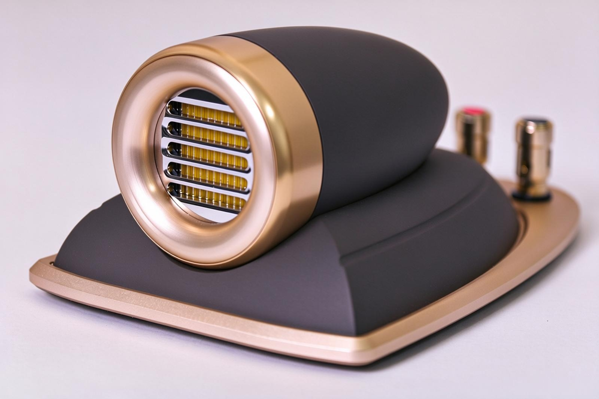
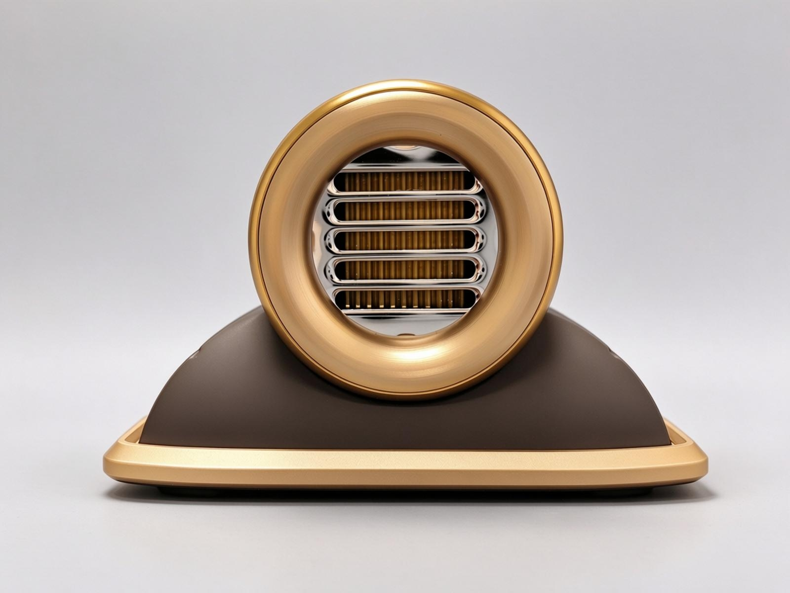
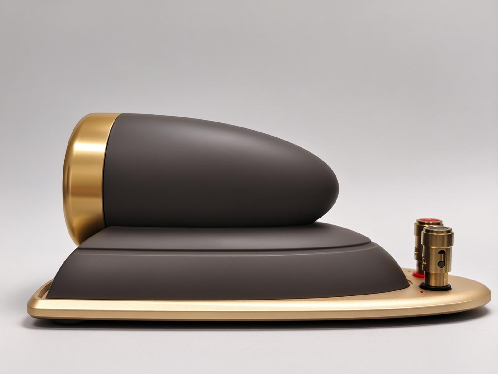

AMT SERIES · 气动高音单元
AMT-ST100h
采用 Kapton 振膜与钕磁体的高频单元，专为细腻、延展的高频重放而设计。
频率响应：Fo – 50 kHz
产品参数
AMT-ST100h 技术规格
产品型号AMT-ST100h
阻抗8 Ω
灵敏度92 dB
谐振频率3.5 kHz
频率响应Fo – 50 kHz
额定功率15 W
最大功率30 W
振膜Kapton
磁体Neodymium（钕）


套件与配件
AMT-ST100h 标准套件包含以下内容。
标准套件
- AMT-ST100h 特种超高音喇叭 × 2
- 产品手册 × 1
- 手套套装 × 1
- 高保真线材 × 1